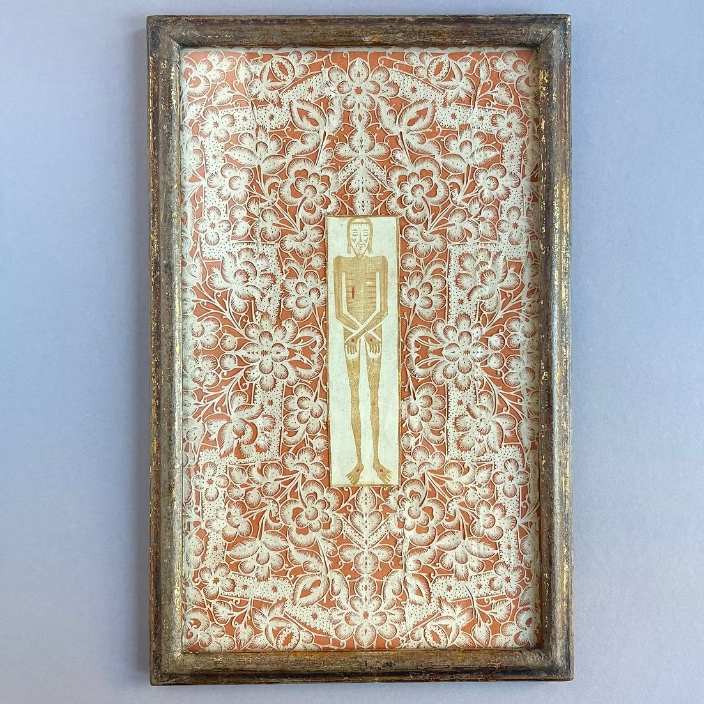
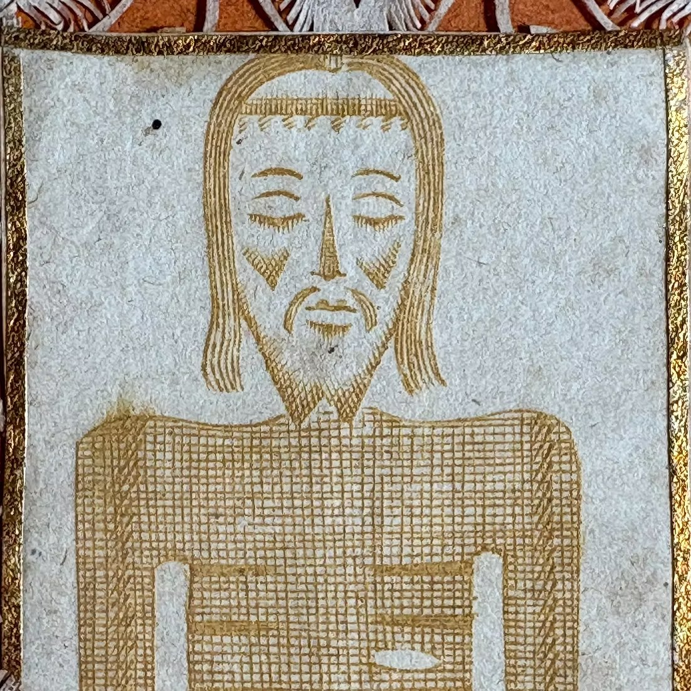

A podcaster recently posted about a founder that he had just interviewed. The founder was the most hardcore founder he's ever encountered after decades of chronicling the most hardcore founders.
Each detail was more extreme than the one that came before it, enumerated in the way that a medieval chronicler would escalate the mortifications of the saints until the congregation was sufficiently prostrate that the church floorboards were bending under them.
The company works seven, maybe even eight days a week. The founder lives, sleeps, and eats in his office. He built a cafe inside because even though he lives amongst other hardcore founders, there is no founder hardcore enough to demand coffee at one, two, three, four, or five in the morning. Two thirds of the company have tattooed themselves with the logo of the company like a cattle brand.
The post closed with a jab at the 9 to 5ers working from home on Fridays, the comfortable, the moderate, and the damned, who exist in his frame only to establish, by contrast, how serious and hardcore this founder is, how committed and how far beyond the ordinary human appetite for rest and domesticity and life outside the building.
No one asks what the company does.
It doesn't matter what the company does. The company is beside the point in the same way that the specific miracles attributed to a particular saint are always beside the point in the hagiographic tradition. What matters is the suffering that preceded it and the renunciation that made it possible. This act, the act of chronicling the hardcore founder, is hagiography.
Hagiography in its precise and medieval sense. The chronicles of the lives of the saints that were composed for the edification and moral subjugation of the faithful. We have not progressed on the structure in 800 years, we’ve only made it secular. The saint renounces worldly comfort. The saint endures what ordinary men cannot. The saint is sustained by something the audience can see the evidence of, but can never quite possess. And the distance between the saint's capacity for pure suffering and the faithful's capacity for admiring it is the apparatus of faith. I am not the saint and you are not the saint. We are the peasant who is hearing about the saint from the friar who visits the monastery. The role is to be moved by it, to move our souls ever closer to the virtue of our Lord.
I keep circling back to the tattoos. 20 people have a startup's logo on their skin. Permanently. The tattoo is the oldest medium of devotion available to the human body. It's the same medium the pilgrims used to mark themselves after reaching Jerusalem in conquest and crusade. The same medium that Roman soldiers used to signify that they belonged to the legion before they belonged to themselves. But instead of the legion, instead of your god, the tattoo is of a corporate logo. It's the terminal escalation of something that I think is worth looking at, because it says something much worse about where we are than anyone seems comfortable saying out loud.
What this reveals is that the wealthiest generation of human beings in the history of our species has become so frightened of being seen as a class so terrified of their position being legible that it has begun performing the lives of people who assemble iPhones in near-slavery conditions in Foxconn plants. Their motivation does not come from a place of solidarity with those workers. And it's not a political conviction about the dignity of labor, the motivation is terror. The specific terror of being seen to have money and to enjoy it. The terror of the surplus being visible and not disguised as the product of equivalent suffering. The seven day work week is the Foxconn schedule, the sleeping in the office is the Foxconn dormitory, the cafe built inside is the Foxconn canteen, but there is no one forcing them to labor, no suicide nets.
These are people that are performing voluntarily in public the precise conditions that we correctly identify as exploitation when they are imposed on a person who has no alternative. And we celebrate the performance because the performance answers the question that this culture has no answer to otherwise.
Why do you deserve so much? Why are you so rich?
Because I suffer. Because I do not sleep. Because I've given up my life to something greater than myself because my employees have scarred their flesh with my symbol and I eat from open containers the leftover food and my body rots, as I sit at the desk, because I have not left this building in 11 days because I am no more of the lines of code that I produce than I am flesh and life. The corporeal faculties that define me, reproduction, love and lust no longer exist. They have eliminated them in service of something greater, and trust me when I say I'm not enjoying any of this. And if I am, I'm enjoying it only because I'm giving it up in sacrifice for something greater. I’m a sicko. I’m barcode.
We should find this considerably more disgusting than we do. When we impose these conditions on a person by necessity we call it what it is, exploitation and we call for its remedy. When they are performed voluntarily by people who could be doing literally anything else with their lives, anything, the whole range of human possibility available to them. Every library unbuilt, every garden untended, every beautiful thing in the world unfunded. We are witnessing a thing that looks like discipline, but is actually the most extravagant waste of economic surplus in the history of our civilization. We are watching people who have more freedom than the Medicis use that freedom to pretend they have less freedom than the line worker in Shenzhen, and we applaud it.
Frank Slootman is a hero of mine.
Slootman ran Data Domain, ServiceNow, and Snowflake, three of the most intensely demanding companies in the history of enterprise software. And everyone who works at any of them will tell you the same thing. The intensity was real, the standards were exacting and brutal, and the culture did not accommodate mediocrity or comfort and had never pretended otherwise. These were intensely hard companies and the people inside them worked intensely hard and they produced just incredible returns for shareholders.
What Slootman did not do, and what perhaps his Dutch cultural values made impossible for him to do, was perform the hardness. He did not sleep on the floor. He didn't build a cafe inside the building. He did not post bullet points about his schedule. He campaigned Pac52s, ocean racing yachts costing tens of millions of dollars, requiring full-time crews that require serious skill and expense. And he sailed them across the Pacific without apology. And Snowflake turned in the best quarters in its history while he was at sea.
The company was not built by suffering. Suffering was orthogonal to his judgment and his judgment was better because he was not performing suffering. He was making decisions from a position of clarity that the performance of suffering specifically and structurally prevents. A person who has not slept and has not left a building in over 100 days and has organized his identity around the demonstration of his own endurance is not in a position to make good decisions about anything, including and especially the thing that he is supposedly enduring for.
I want to make a specific and narrow distinction between a hard company and a grindslop company. Because from the outside, it's easy to think these two things are the same. They both involve long hours. They both involve sacrifice. They both involve pushing people far past the point of comfort. But the difference is what the hours are for. In a hard company, the hours serve an output. The hours are the cost of the thing being built and no one is documenting the cost because the cost is not the product. In a grindslop company, the hours are the output. The documentation of those hours and the performance of suffering is the product. The suffering is the thing being built and the company is, in some very real sense, a machine for converting human effort into the feeling of exerting human effort.
No one at Snowflake was tattooing the logo on their body. They were too busy doing their damn jobs.
There is a media structure that has grown to serve the grindslop economy, and I want to describe it with care because many of the people involved at least at the very edges edges of it are close friends of mine. And I don't think what they're doing is cynical. I think the structure is the damaging thing and the people that are inside of it are operating in good faith within a form whose implications they have not fully seen, which is how most of our world works and I am not without my hypocrisy in this regard.
My friend Eric Jorgensen wrote a book about Elon Musk. David Senra, whose podcast is organized around the subjects of biographies, interviewed Jorgensen about Musk. The output of this produced something that structurally was a guy talking to a guy about a guy about a guy and at no point in this chain did anyone build a rocket or run a company or do any of the work that the chain exists to celebrate. That work is upstream. What we're watching downstream is performances of proximity to work. And I keep thinking about this because it seems like every additional layer of remove, every additional step away from Musk and whatever it is Musk actually does all day, doesn't dilute the holiness but actually concentrates it somehow.
The biography is purer than Musk. I know how that sounds. But think about it like a relic, like an actual medieval relic. Musk has to deal with lawsuits and the rockets blowing up and the indignity of posting through it on the internet. The book carries none of that. The story has absorbed the good parts, the relentlessness and the willingness to suffer and the subordination of self to mission, and everything embarrassing about Elon, the parts that make him a real person, got left behind.
It's the same thing the church did with the bones of saints. You take a finger bone out of Thomas and you put it in a golden box and you carry it around Europe and people weep when they see it. They feel something in the presence of that finger that they could never feel in the presence of Thomas because Thomas was a guy who had opinions and doubts and might say something weird at dinner. The finger just sits there being holy. It's perfect.
And the thing recurses. Someone will interview the interviewer about interviewing the biographer. Someone will thread about the interview. Someone will thread about the thread. Every layer is further from anything real and closer to the pure performance of the attributes of building. The Fourth Lateran Council tried to shut this down in 1215. It didn't work. It never works. You can't regulate the demand for proximity to the sacred because the demand is bottomless and the supply of actual sanctity is always tiny.
I want to be honest about my own hypocrisy here because the argument requires it.

I bought a piece of devotional art at a book fair in New York not too long ago. It was a sanguine engraving of the Holy Shroud of Besançon hand cut into a sheet of white paper, an intricate floral motif by a woman in a convent sometime in the 17th or 18th century, laid over a backing sheet of orange paper.
Christ's body is depicted faintly in delicate gold ink. The wounds were touched by hand in red pigment with the edges gilded. The colorist got the wound on the wrong side because she was painting the depiction of Christ as a conventional portrait, because she did not understand that the shroud was a body imprint and therefore a mirror image. This is a small human error propagated in the work across 300 years.

The Shroud of Besançon was almost certainly a copy of the Shroud of Turin, or at least an artifact prompted by the Turin relic's presence in the region. It was first recorded in 1523 without much esteem at first. A canon refused to move statues to make room for its reliquary, but over the next two centuries it became an object of enormous veneration and drew crowds of nearly 30,000 at Easter and was credited with cures for the eyes and invoked against plague. The nuns that produced these devotional copies, Annociades, Carmelites, Clarissans, committed themselves purely to a contemplative life, framed the image in ornaments of gold and silk and reserved the finest panels for display to the most illustrious pilgrims.
On the 24th of May 1794, the shroud was torn apart and the cloth was used to bandage the wounded of the Revolutionary Army. The relic does not exist anymore, but what remains are the copies, the engravings, the embroideries, and the paper cuts made by cloistered women who in many cases never saw the thing they were reproducing. My paper cut is likely a copy of a copy of a copy of a copy of a relic that in itself is probably a copy depicting a body that is not here on this earth anymore that was made by a woman who understood that the point was not the paper or the cutting or the wound, but that the whole chain existed to transmit something that was not able to be contained in the original.
I look at it every morning during my prayers, the orange paper and the rough cutting, the wound on the wrong side. And every morning I feel the same thing looking at it. The encounter with the divine I feel by looking at it, the embodiment of the virtue of Christ and his suffering during the Passion, is real in the way that I know anything about my faith. The chain works because every link in that chain was pointed towards something that the chain itself could not hold and even if the distance is enormous its value was clarified by the pointing.
The grindslop economy is not pointed towards anything beyond itself. It is pointed simply at the worship of itself. The relic is the exhibit and the exhibit is the relic and the audience gathers to see the reliquary opened and inside is another smaller reliquary and inside that is another and in the center there's nothing. And I don't mean the luminous nothing that the mystics describe when they run out of language for God, I mean actually nothing. The tomb is empty, and not because of the Resurrection. It was just always empty.
I ended up at a dinner a few months back, one of those odd cross-pollinated tables the city still produces, and the woman next to me turned out to be the heiress to a royal line. Accumulated over generations the wealth had developed schools and hospitals and trusts and even countries and board seats that no one particularly wanted but maintained because the maintenance was the point of the line.
She bemoaned the death of what she called the spirited aristocrat and it took me most of the dinner to understand what she meant. The spirited aristocrat for her was beautiful people inhabiting beautiful lives, consuming beautiful things as a sacred vocation, the performance of aristocratic virtue as a living exhibition of what a human life can be when freed from necessity. Freed from necessity which is different from freed from obligation. The lives of these aristocrats, no matter how gilded, seem incredibly unpleasant. They are buried in unbelievable amounts of obligation.
She was right to mourn it. Her peers, the other contemporary lines of great families, are being rotted away by something much worse in every direction.
The modern rich have split into two populations that look different but share the same vacancy. The first consumes without orientation, the million dollar F1 hospitality packages and the mega yachts that look like parking structures and the undifferentiated graceless bulk acquisition of expensive experience that differs from the inexpensive only in the denomination of the bills required to pay for it. This is not aristocratic consumption. This is conspicuous consumption pointed at nothing, oriented around the act of consumption itself.
The second population, which is subtler, is the one that has produced the hagiography and the tattoos. It has fled so far in the opposite direction that it arrived somewhere that I believe is genuinely perverse. These people are so frightened of being seen to enjoy the surplus that they've organized their entire visible existence around the performance of labor so elaborate and escalating that the performance is indistinguishable from Foxconn conditions it unconsciously imitates. Between the mega yacht and the mattress on the floor of the San Francisco $20,000 a month apartment, there is almost no one doing the thing that every previous civilization with as much surplus understood as a fundamental obligation of having an unequal and rich society.
Almost no one. I have a dear friend, a founder, someone who built and sold a real company, who lives in a beautiful and expensive house with John Muir's rocking chair in his house. A Nakashima dining table from 1976. Thousands of dollars of Navajo Crystal rugs from the 40s. JBL Paragon speakers from the 60s that cost ungodly amounts. He has no shame about any of this, and that is what makes him unusual and important to me. He's not performing austerity. He's not apologizing for his surplus. He lives among old and beautiful objects that are made by people who cared enormously about the making.
And his life is pointed at something through those objects, the way my paper cut is pointed at something through the orange paper and the misplaced wound. He is one of the few people I know in this industry who understands that surplus from wealth is a responsibility requiring the performance of aristocratic virtue as an answer. And that answer is of course to do what Christ calls us to do, charity, good works, the enrichment of those who have much less than us, but also the performance of aristocratic virtue, to live well and visibly and without apology, demonstrating what a life can be when it's freed from necessity and pointed towards beauty.
I think a lot about the European aristocracies because they had an answer to this that we don't have and I'm not sure we're capable of having. You had money because God put you there and in return you owed, specifically, to the estate which was there before you were born and will be there after you die and which you were maintaining not because it was pleasant, I mean maintaining these manor houses sounds genuinely miserable, but because your relationship to the thing was custodial. You owed to the tenants, the church, the regiment, the county, the season, and ultimately to your God, a performance of aristocratic beauty.
The American expression of this, perhaps last seen in the railroad barons of the Gilded Age, was subtly different. Carnegie built his libraries, Rockefeller built colleges, and Frick built a beautiful museum. Surplus passed through you on its way to something that would outlast you even if the state could not provide the mechanism of endowment.
But still these were not meritocratic bounties. The lord does not justify his estate by working harder than the tenants. Carnegie did not sleep on a mattress on the ground. The surplus freed you to meet obligations that people without surplus could not meet and how you met them was the only justification anyone would accept.
This inversion is perhaps where it all went sideways. A society that's come to terms with its aristocrats knew that money came from inheritance and history and God. There was no sense in which an aristocrat earned the money so the money came preloaded with obligation. If you live in a meritocratic society, you have to believe that every dollar is a direct and fair contribution returned to you by the rational market. If you're all squared up and you earned every dollar there's nothing left to give.
And you have to perform that earning continuously to provide proof that you suffered, proof that the return was proportional, proof that you don't owe anything to anyone or that the market was unfair in any way. Look how much I suffer. Look how much I hurt.
“996” is a mass production / central planning approach to creation. it doesn’t work for inventing new things. it only works for cog like scaling of mechanical processes. great work doesn’t happen after 100 hour weeks, it only appears in tiny fleeting random moments, embrace that
You can assemble an iPhone with 996, but you could have never designed one.
Great work has always demanded sacrifice and often brutal hours and I'm not disputing this. What I'm disputing is the direction. These people, many of them friends, have more economic freedom than any class in history and they've chosen, freely, to simulate the conditions of a Chinese assembly line and call it virtue.
In a world in which automation will collapse the cost of everything to basically zero, the only question that matters is what do you actually want. What do you consume. What do you put in your body. What you put in your heart. This is the only constraint left and it's a constraint placed squarely on your character and your own sense of what's beautiful and worthwhile. If we approach this world with a generation whose entire preparation has been sleeping on office floors and giving themselves autoimmune disorders from working too hard, then what's the point.
It’s perhaps an unsavory argument, but:
A natural aristocracy, even a silly one, even an inherited one, pheasants and silly hats and houses that cost more to heat than a person earns in a year, is more honest and more good than what we've built. The aristocrat does not sleep on the floor to prove that his wealth is deserved. He does not brand his skin with the crest of the family. He has money because he has money, and everyone knows that, including him. And the question his culture asks, the only question it considers worth asking, is what he will do with it? What he will build that outlasts him? What he will tend that was not his to begin with?
The hagiographic apparatus can only intensify.
Years from now, a podcaster will walk through an office. The company worked 14 days a week, twenty eight hours a day.
The founder lived and slept, or perhaps even never slept but worked- 24/7 in that office. Every employee had the logo tattooed on their face. The podcaster walks through the building in the same way a pilgrim walks past relics. Slowly. Reverently. With devotion.
Past desks where employees still work. The only difference now is that those employees are dead, they died in service of the work, but their skeletons still linger over the slack channels and the endless ai agent workflows, every one of them, the logo still legible on their skulls, and someone is there in the corner writing a book about the founder who is also a skeleton seated at his desk next to the cafe he built, and the book will be very good, and someone will interview someone about the book, and the interview will be very popular, and the audience will feel the awe and the inadequacy that the hagiographic form has always existed to produce, and no one at any point in this chain will ask what the company did because the company was always beside the point.
With particular thanks to Marshall Kibbey Rare Books, who sold me the beautiful paper cut.